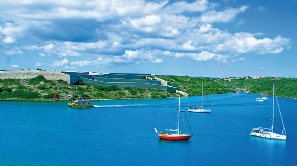

Maó / Mahón. La légende de la ville sans vie
Les mauvaises langues racontent que le port de Mahón a été la scène d’une capitulation infâme, lorsqu’au XVIe siècle, plus précisément le 1er septembre 1535, le méprisable Barberousse entra dans la rade mahonnaise et s’imposa dans la ville qui était à l’époque une cité de commerçants dépourvus d’esprit militaire. Au bout de trois jours de siège il essaya de prendre le pouvoir.
Selon cette légende obscure, Barberousse aurait exigé le pillage de la ville et la soumission de ses habitants comme prisonniers, en échange il promit d’épargner dix maisons.
Une fois que les Turcs avaient abandonné le lieutenant et les jurés de Ciudadela ils capturèrent les autorités mahonnaises et les accusèrent de trahison, ce qui les arrangea plutôt que d’accepter la défaite dont ils étaient également coupables. Vingt-trois ans après, les Ottomans reviendront à Mahón mais ils seront chassés par l’artillerie du nouveau fort de San Felipe, se dirigeant à Ciudadela, mais ça c’est une autre histoire…
Bien que la version de la trahison ait été réfutée par des historiens expérimentés qui démontrent que la ville de Mahón était dépourvue de défenses et de garnison et n’aurait pas eu d’autre choix que de capituler une fois ses remparts démolis. La légende de la présumée lâcheté des mahonnais contre le courage civique des habitants de l’ouest, qui à leur tour ont été envahis par les Sarrasins (ce dont d’illustres habitants de Ciutadella ont profité pour s’emparer des terres des prisonniers de Constantinople). L’histoire a tourné autour de l’honneur du village de Mahón et c’est certainement de là que vient la traditionnelle rivalité qui existe entre les deux extrémités de l’Île.
 Au fil du temps, Mahón et son port ont été attaqués par des envahisseurs plus civilisés, les Britanniques, qui ont élu la ville capitale de l’Île, envoyant les clercs gênants à l’ouest de la ville, où ils vivent encore heureux aujourd’hui.
Au fil du temps, Mahón et son port ont été attaqués par des envahisseurs plus civilisés, les Britanniques, qui ont élu la ville capitale de l’Île, envoyant les clercs gênants à l’ouest de la ville, où ils vivent encore heureux aujourd’hui.
Les enfants de la Perfide Albion ont eux pris conscience de la grandeur du port de Mahón et de la nature spéciale de ses habitants, si chaleureux et peu aventureux, exempts de fanatisme religieux et amants de la culture et du libre-échange. En général, les Britanniques s’entendaient bien avec les mahonnais avec qui ils ont fraternisé dans les maisons seigneuriales et littéraires de la rue Isabelle II, se moquant, par exemple, de la concentration de clercs par mètre carré dans la ville de l'Ouest et des voyous de la Sainte inquisition dont Minorque aurait échappé au cours de ce siècle.
 Quelle est donc la nature de la “mahonesidad”? D’après Oliaigo Pons, personnage principal fictif il y a quelques années des fêtes de Gracia : Mahón est la ville la plus “inter classique” qu’il y ait sur terre. Ses habitants sont tous Allès aux mêmes collèges, au même hôpital mélangeant les effluves et les vapeurs, et ils sont spécialement enclins à ne pas faire de distinction entre les différentes classes sociales. Les mahonnais – dit Oliago lors de l’ouverture des fêtes- ne sont pas impertinents, ni querelleurs, ni rêveurs mais ils se contentent de “una cosa que estigui bé”(un juste milieu), ainsi ils ont toujours su se débrouiller et créer un grand cadre patronal (entrepreneurs de la vieille école, sans besoin de coaching) comme l’ancienne Industrie Fabril Mahonesa ou l’Anglo-espagnole de Moteurs et l’essor de l’industrie de porte-monnaie en argent; ou plus tard avec les caisses enregistreuses, les bijoux, les chaussures et le succulent fromage dont l’appellation d’origine fait briller le nom de la ville “belle et galante ” comme l’évoque son délirant mais attachant hymne. Mais vous ne pouvez pas comprendre la “mahonesidad ” sans faire appel à l’ouverture d’esprit du siècle des Lumières dans lequel la présence anglaise et française favorisa le contact des étudiants de Mahón avec l’Europe. Ce qui, selon le “vieux professeur” Hernández Mora (d’après les écrits du magnifique livre “Maó” de Josep Mª Quintana , autre intellectuel incontestable), a été ressenti essentiellement à Mahón dont la réputation de ville libérale et cultivée a une fondation solide: un Ateneo qui est au centre de débats et de conférences, el Orfeón Mahonés en théâtre, le Théâtre Principal lui-même où l’on n’a jamais cessé de présenter des pièces d’opéra d’excellence organisées par les Amis de l’ Opéra, Jeunesses Musicales, Amis de l’orgue de Santa María, Musée de Minorque, collection Hernández Mora, Bibliothèque publique…
Quelle est donc la nature de la “mahonesidad”? D’après Oliaigo Pons, personnage principal fictif il y a quelques années des fêtes de Gracia : Mahón est la ville la plus “inter classique” qu’il y ait sur terre. Ses habitants sont tous Allès aux mêmes collèges, au même hôpital mélangeant les effluves et les vapeurs, et ils sont spécialement enclins à ne pas faire de distinction entre les différentes classes sociales. Les mahonnais – dit Oliago lors de l’ouverture des fêtes- ne sont pas impertinents, ni querelleurs, ni rêveurs mais ils se contentent de “una cosa que estigui bé”(un juste milieu), ainsi ils ont toujours su se débrouiller et créer un grand cadre patronal (entrepreneurs de la vieille école, sans besoin de coaching) comme l’ancienne Industrie Fabril Mahonesa ou l’Anglo-espagnole de Moteurs et l’essor de l’industrie de porte-monnaie en argent; ou plus tard avec les caisses enregistreuses, les bijoux, les chaussures et le succulent fromage dont l’appellation d’origine fait briller le nom de la ville “belle et galante ” comme l’évoque son délirant mais attachant hymne. Mais vous ne pouvez pas comprendre la “mahonesidad ” sans faire appel à l’ouverture d’esprit du siècle des Lumières dans lequel la présence anglaise et française favorisa le contact des étudiants de Mahón avec l’Europe. Ce qui, selon le “vieux professeur” Hernández Mora (d’après les écrits du magnifique livre “Maó” de Josep Mª Quintana , autre intellectuel incontestable), a été ressenti essentiellement à Mahón dont la réputation de ville libérale et cultivée a une fondation solide: un Ateneo qui est au centre de débats et de conférences, el Orfeón Mahonés en théâtre, le Théâtre Principal lui-même où l’on n’a jamais cessé de présenter des pièces d’opéra d’excellence organisées par les Amis de l’ Opéra, Jeunesses Musicales, Amis de l’orgue de Santa María, Musée de Minorque, collection Hernández Mora, Bibliothèque publique…
 Mais Mahón est avant tout célèbre pour son port, sûrement le plus beau de la Méditerranée, réalité révélée et donc indiscutable pour les mahonnais. Au bord de celui-ci, nombreux sont ceux qui se promènent et discutent lorsque le beau temps arrive, se baladant “salmonete arriba ”, “salmonete abajo ”, comme le dit le jeu de mot populaire (moll signifie en Catalan Minorquin “muelle/quai” mais aussi “salmonete/ rouget”), alors qu’en hiver ils le font habituellement le samedi matin dans les rues piétonnières: Es Carrer Nou y S’Arravaleta ainsi que Ses Moreres et Sa Costa de sa Plaça qui sont depuis peu elles aussi réservées aux piétons. Les rues sont des réseaux sociaux bien plus intimes que ceux que l’on trouve sur le net. Une vie culturelle aussi intense, avec des expositions picturales, des conférences, des forums, des spectacles d’opéra, des saisons de ciné-club contribuent à donner vie à la ville ce qui dément la légende de ville mourante qu’ont répandue des nostalgiques du passé. La ville met au défi celui qui s’intéresse au monde culturel de suivre ce curieux jeu de pistes tous les week-ends. Mais il faut prendre la vie mahonnaise avec sérénité pour ne pas se dévier du chemin de ce rythme de vie si posé et pas besoin de faire de profession de foi. Il ne faut pas s’efforcer à devenir un bon mahonnais, voyons, nous ne sommes ni chauvins ni exclusifs. Il suffit de se laisser aller.
Mais Mahón est avant tout célèbre pour son port, sûrement le plus beau de la Méditerranée, réalité révélée et donc indiscutable pour les mahonnais. Au bord de celui-ci, nombreux sont ceux qui se promènent et discutent lorsque le beau temps arrive, se baladant “salmonete arriba ”, “salmonete abajo ”, comme le dit le jeu de mot populaire (moll signifie en Catalan Minorquin “muelle/quai” mais aussi “salmonete/ rouget”), alors qu’en hiver ils le font habituellement le samedi matin dans les rues piétonnières: Es Carrer Nou y S’Arravaleta ainsi que Ses Moreres et Sa Costa de sa Plaça qui sont depuis peu elles aussi réservées aux piétons. Les rues sont des réseaux sociaux bien plus intimes que ceux que l’on trouve sur le net. Une vie culturelle aussi intense, avec des expositions picturales, des conférences, des forums, des spectacles d’opéra, des saisons de ciné-club contribuent à donner vie à la ville ce qui dément la légende de ville mourante qu’ont répandue des nostalgiques du passé. La ville met au défi celui qui s’intéresse au monde culturel de suivre ce curieux jeu de pistes tous les week-ends. Mais il faut prendre la vie mahonnaise avec sérénité pour ne pas se dévier du chemin de ce rythme de vie si posé et pas besoin de faire de profession de foi. Il ne faut pas s’efforcer à devenir un bon mahonnais, voyons, nous ne sommes ni chauvins ni exclusifs. Il suffit de se laisser aller.